iSekur documentation
Everything about the iSekur IRC client: getting it running, a tutorial, how each part works, and a reference of every command and setting.
In iSekur itself, /help lists the commands, /help command explains one, /guide opens the tutorial and /set opens the settings window. The guide, command and settings sections below come straight from those, so they match the app.
StartInstall
macOS (Homebrew)
brew install gcanosa/isekur/isekur isekur # start it brew upgrade isekur # later: update to the latest release
Prebuilt packages
The links always point at the newest release: macOS (Apple silicon), Linux x86_64, Linux arm64 (both Linux packages need libssl3).
curl -L https://github.com/gcanosa/iSekur/releases/latest/download/isekur-linux-x86_64.tar.gz | tar xz
sudo isekur-linux-x86_64/install.sh # installs to /usr/local
From source
Needs a C++17 compiler, GNU make, OpenSSL 1.1+ or LibreSSL, and PAM (libpam0g-dev on Debian and Ubuntu). termbox2 and libvterm are included. It builds on macOS, Linux, FreeBSD and Cygwin.
git clone https://github.com/gcanosa/iSekur && cd iSekur make # gmake on *BSD; make notwitch leaves Twitch support out make test sudo make install # /usr/local; PREFIX=... must match the build man isekur
First start
The first time it runs, iSekur writes ~/.config/isekur/isekur.conf with every setting at its default. An empty value means "the default". You can edit the file by hand or change settings from inside the client:
/set theme neon # changes apply right away /set server.sekurnet.autojoin #a,#b /save # writes them to the file (comments are kept)
Server settings take effect on the next /connect, and [web] after /web stop and /web start. /reload re-reads the file after you edit it by hand.
The first start also opens the first steps guide in a *guide tab. Its "Don't show this at startup" box sets show_guide = off, and /guide opens it again.
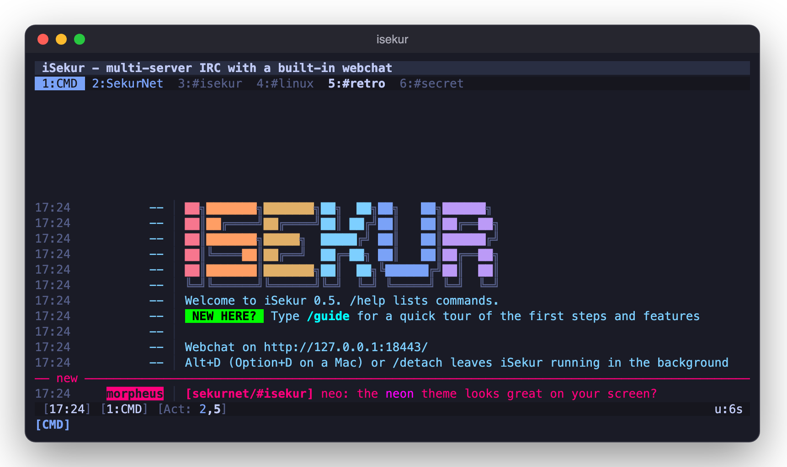
/guide hint and where the webchat listens/server irc.sekurnet.org 6697 -tls -name sekurnet, then /join #iSekur. That's iSekur's own channel, for help and feedback.First steps guide
The same pages /guide shows in the app. Turn them with the buttons or the ← → keys.
Using iSekurThe screen
From top to bottom:
- Topic bar: the channel topic. Click it to unfold a long one, scroll it sideways with the wheel, and double click it to edit it (when you're allowed to, e.g. as an op on a +t channel). Ctrl+T hides it.
- Tab bar: one tab per server, channel, private chat, shell and special tab (
*guide,*channelsfrom/list). Tab colors show activity: messages, highlights, joins and parts. Right click a server tab to fold its channels away; it shows "+N" instead. - Chat with the nicklist on the right in channels (F2 hides it). A "new" line marks the first message you missed. The terminal and the webchat share that marker.
- Status bar: the time, your nick and modes, the tab, lag,
[Act: …]with clickable numbers of tabs that have activity, and optionally CPU, memory, load and battery (/statusbar). - Input line: type to talk,
/for commands. Matches show up above it as you type: ↑ ↓ pick one, Tab completes.
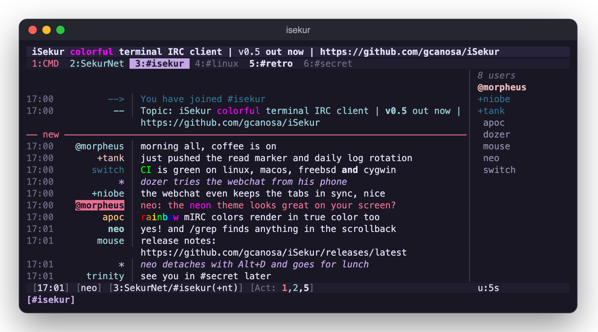
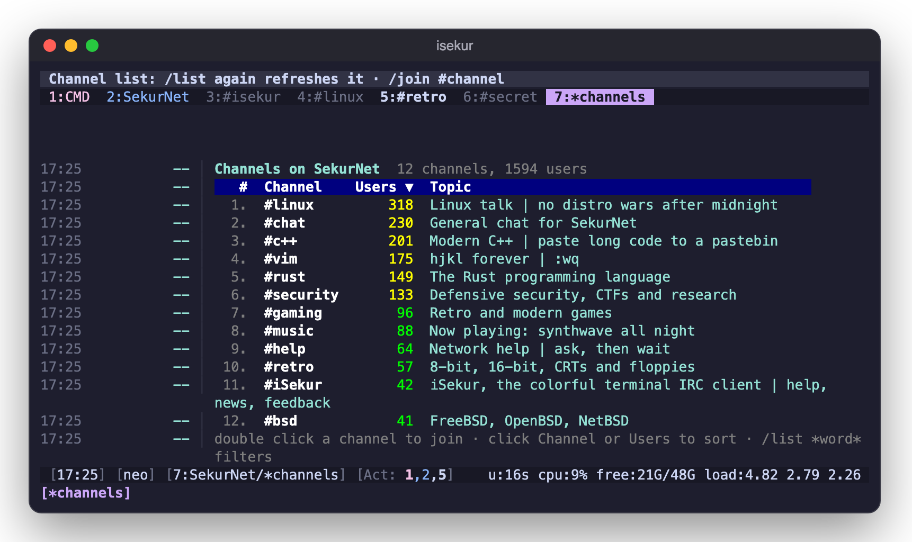
/list opens a sortable table: double click a channel to join. The status bar shows CPU, memory and load (/statusbar)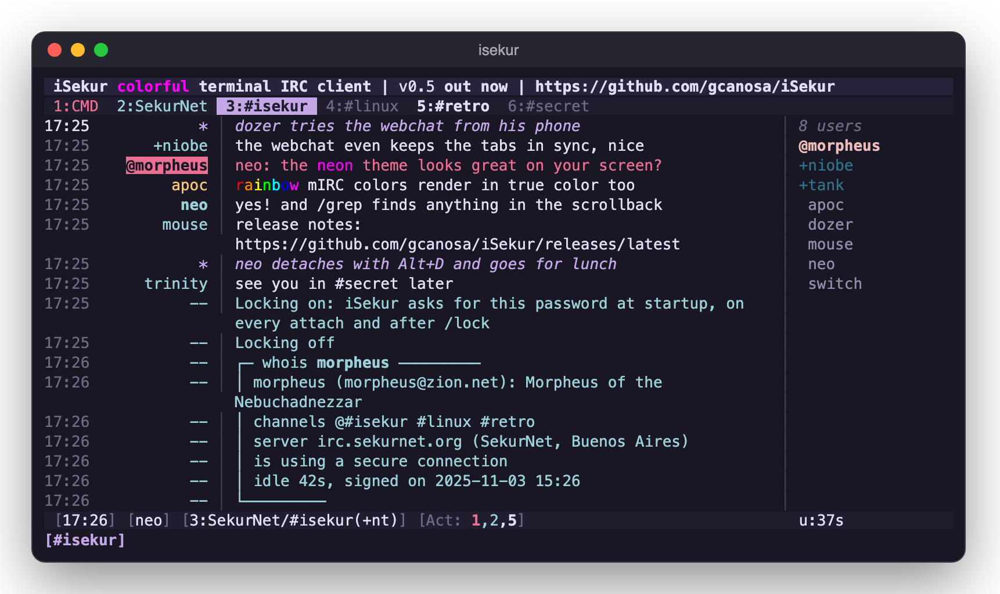
/whois answers in a box, in the tab you asked fromKeys
| Key | Action |
|---|---|
F1, Alt+K, /keys | All the keys in a window, drawn as keycaps by group, your own [keys] included (terminal and webchat) |
| Alt+1…9, Alt+0 | Go to tab 1–10 |
| Alt+← Alt+→, Ctrl+P Ctrl+N | Previous / next tab |
| Ctrl+A, Alt+A | Next tab with activity |
| Alt+D, Ctrl+Z | Detach: iSekur keeps running in the background |
| Ctrl+X | Next server |
| Ctrl+G, Alt+J | Find a tab: type part of a channel, nick or network name, then Enter |
| Ctrl+W | Close the tab (parts the channel) |
| PgUp PgDn | Scroll |
| Ctrl+L, Alt+L, F2 | Show / hide the nicklist |
| Ctrl+T, Alt+T | Show / hide the topic bar |
| F3 | Mouse on/off (Shift+drag always uses the terminal's own selection) |
| Tab | Complete a command, a /help topic, a /set key or a nick |
| Home End, Ctrl+E, Ctrl+U Ctrl+K | Start / end of line, delete to start / end |
| Alt+Backspace | Delete the previous word |
| Ctrl+B C O V ] _ | mIRC formatting: bold, color, reset, reverse, italic, underline |
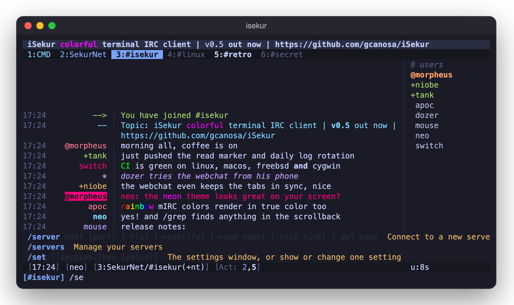
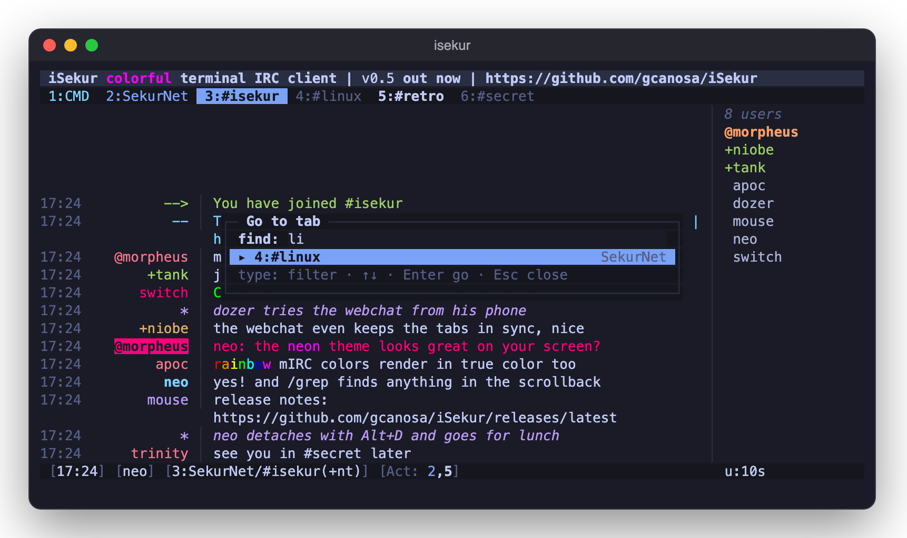
On a Mac, Option works as Alt (Option+D detaches). Rebind any action in the [keys] section: M- is Alt, C- Ctrl, D- Cmd. See [keys].
Mouse
- Click tabs, activity numbers and nicks. The wheel scrolls the chat and the nicklist. Dragging copies the text, through OSC 52.
- Right click a nick: query, whois, CTCPs, ignore, plus op / voice / kick / ban when your rank allows, and kill / G-line for IRC operators.
- Right click a channel tab: quiet mode, clear, add to or remove from autojoin, turn on E2E, close.
- Right click a server tab: connect, reconnect or disconnect, fold its channels, connect at startup, close.
- Links in messages and the topic are terminal hyperlinks (OSC 8): Cmd+click (Ctrl+click on Linux) opens one. In tmux, add
set -as terminal-features ",*:hyperlinks". - Double click a
#channelanywhere to join it.
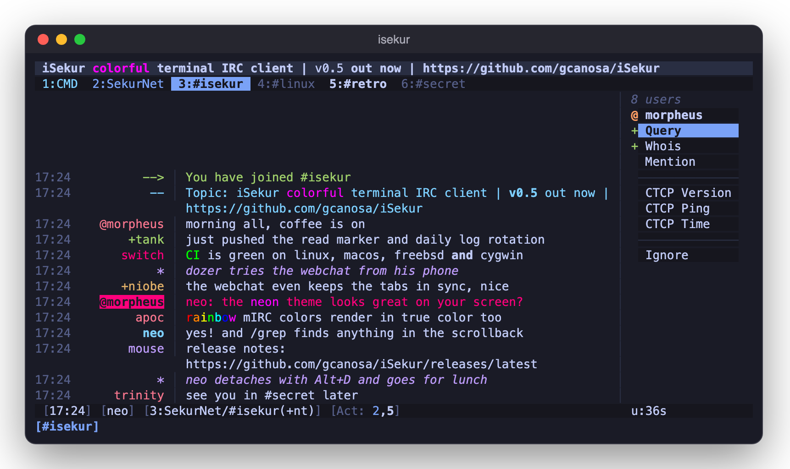
Detach and attach
iSekur runs like a tmux session. The IRC side lives in a background process, and your terminal is only attached to it.
isekur # start (or attach, if it's already running) Alt+D / /detach # back to the shell: still connected, still in the channels, still logging isekur --attach # back again, from this or any other terminal or SSH login isekur --daemon # start in the background without attaching isekur --list # the ones running, and the command that attaches each /attach host # inside iSekur: another machine's iSekur, live in a tab (over ssh)
Closing the terminal or losing the SSH connection detaches too; only /quit really ends it. One terminal is attached at a time.
Several sessions
Run one per config file: isekur -c ~/.config/isekur/work.conf, then Alt+D and isekur -c ~/.config/isekur/fun.conf. isekur -c work.conf --attach picks one. Each one uses a socket next to its config, named after it (work.sock), and logs background output to work.log.
Another machine
/attach host runs ssh -t host isekur --attach and shows that iSekur live in a tab. host can be a name, user@host or a Host from ~/.ssh/config. Keys go to the remote iSekur except Alt+←/→ and Alt+1–9, so Alt+D in that tab detaches it and leaves it running. /attach host config picks one of several there.
KillUserProcesses=yes), run loginctl enable-linger $USER once, or iSekur stops when you log out. Detaching isn't available on Cygwin.While nothing is attached, the autoaway plugin marks you away (/plugin install autoaway). On joining a channel, it catches up on what you missed through IRCv3 chathistory when the server supports it.
The webchat
The webchat is your live session in a browser: the same tabs, menus, input line, suggestions, status bar and theme. It's not a separate client, so everything you do there happens in the running iSekur, the way a bouncer works.
Turning it on
isekur --hash-password # type a password, copy the line it prints [web] autostart = on # or: isekur --web, or /web start while running bind = 127.0.0.1 port = 8443 user = me password_hash = pbkdf2$sha256$...
Then open http://127.0.0.1:8443/ and log in. /web status shows the address and /web stop turns it off. --daemon always starts it.
- Bound to localhost, it serves plain HTTP. That's for this machine, an SSH tunnel, or a reverse proxy that adds TLS.
- Bound to another address, HTTPS is mandatory. Give it
certandkey(Let's Encrypt,tailscale cert…). Without them, iSekur makes a self-signed certificate next to the config. - Failed logins are locked out for a while, and the password is stored as a PBKDF2 hash.
Behind a reverse proxy
Keep bind = 127.0.0.1 and let the proxy do TLS. With Caddy:
chat.example.org {
reverse_proxy 127.0.0.1:8443 # plain http to iSekur, not https
}
As an app, with notifications
With a trusted certificate (or on localhost), the webchat installs as an app (PWA) on the home screen or dock. The bell button turns on notifications for highlights and private messages, on Android and on an iPhone once the webchat is installed.
What it adds
- + adds a server, ⚙ edits every setting in place (Apply, or Apply & save), ⓘ is
/about, and the server-rack button manages servers. - ⇅ Files downloads what's in
dcc_dirto your own computer whendcc_web = on, seedbox style. - Your
[keys]work too. Alt+W closes a tab and Alt+X goes to the next server, since browsers keep Ctrl+W and Ctrl+X. - With
/lock on, the webchat asks for the lock password too.
Security
Passwords in the config
sasl_pass, password and nickserv_pass are saved encrypted (enc:…), with the key in secret.key next to the config. Type one in plain text and iSekur encrypts it on the next start or /reload. The config file is created private (mode 0600). Passwords never show in /set or the settings window.
Lock: /lock
/lock on sets a master password. From then on, iSekur shows only a password box at startup, on every --attach and after /lock, before any tab, log or message. Three wrong tries wait a minute. /lock off asks for it before turning it off, and /lock on again changes it.
pkill isekur), set lock = off in the config and start it again.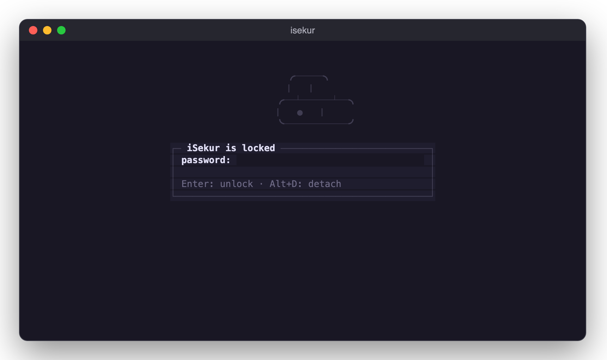
/lock: nothing of the session shows until the password is typedEncrypted private chats: /e2e nick
/e2e nick (alias /sq) asks for a password, typed hidden, and invites the other person. They accept with /e2e yournick and the same password. A matching password turns on AES-256-GCM for that query, with the key derived by scrypt, and both sides see 🔒. A wrong one is reported to both and nothing is encrypted. Keys stay in memory only, and /e2e off ends it.
Encrypted channels: /e2e #chan
/e2e #chan (or "Turn on E2E" in the tab menu) encrypts what you say there. Everyone who typed the same password reads it, marked 🔒 on each line and on the tab. Everyone else sees +iSE noise. There's no handshake, so a wrong password only shows when the others' lines don't open. To drop someone, change the password. For autojoin channels the key (not the password) is saved in e2e_keys, so a restart doesn't ask again.
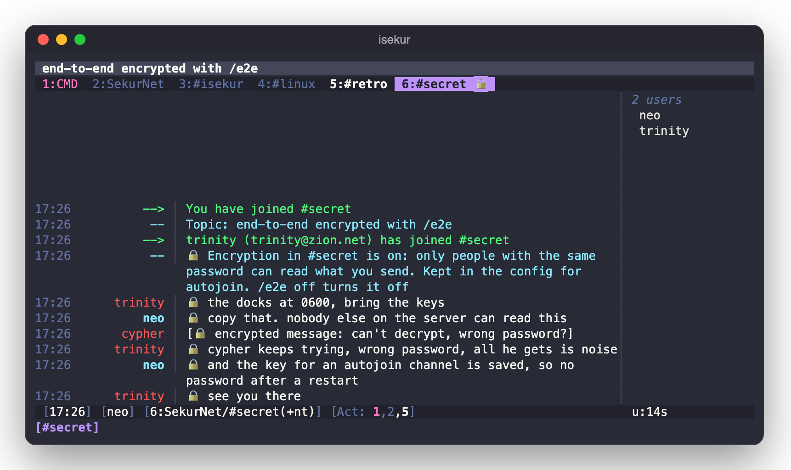
A real shell: /shell
/shell opens your $SHELL as a login shell in a tab, after checking this machine's login and password through PAM (pam_service, default login). vim, top, ssh and Ctrl+C all work. Three wrong logins lock it for a minute. It's never reachable from the webchat or from IRC, only from the terminal iSekur runs in.
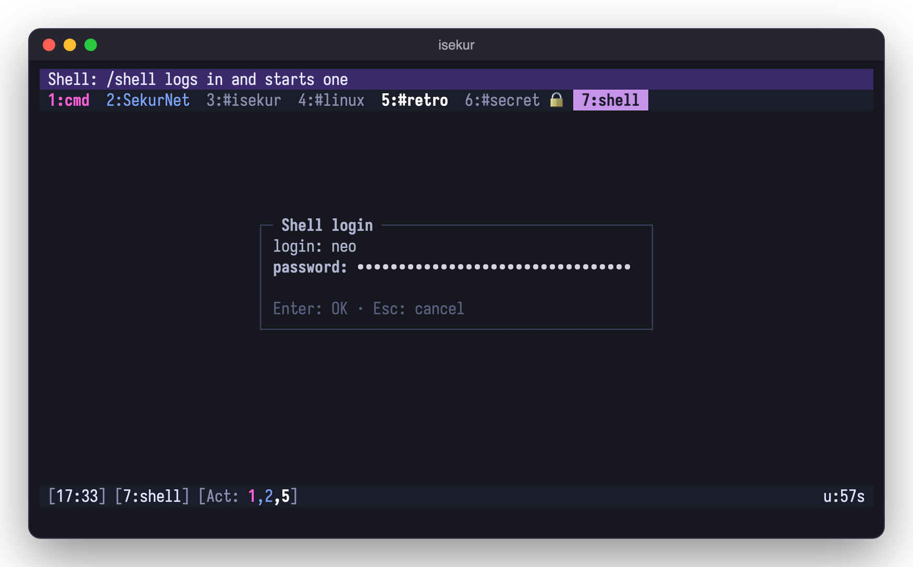
/shell asks for this machine's login, checked through PAMShell commands: /exec
/exec ls -la (alias /sh) streams the output into the cmd tab. /exec -o uptime says it in the current channel. Commands are killed after exec_timeout seconds, and the webchat can't run them unless exec_web = on.
Themes
iSekur comes with 37 24-bit color themes, with a 256-color fallback for terminals that need it (colors = 256). /theme alone opens a picker that previews each one live; /theme name switches directly. Themes are saved without /save.
Dark: default, neon, dracula, tokyonight, catppuccin-mocha, gruvbox, nord, onedark, rose-pine, kanagawa, solarized, github-dark, everforest, ayu, nightfox, night-owl, material, contrast-dark. Light: tokyonight-day, catppuccin-latte, gruvbox-light, rose-pine-dawn, solarized-light, github-light, one-light, kanagawa-lotus, nord-light, everforest-light, ayu-light, dayfox, light-owl, material-lighter, contrast-light. Classic: mirc, mirc-dark. See them on the home page.
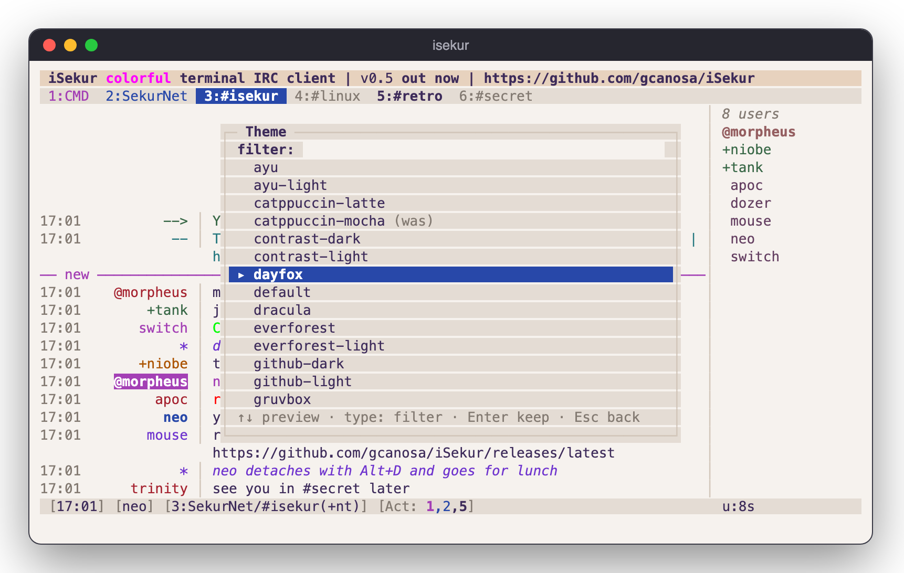
/theme: ↑↓ previews each theme live over your chat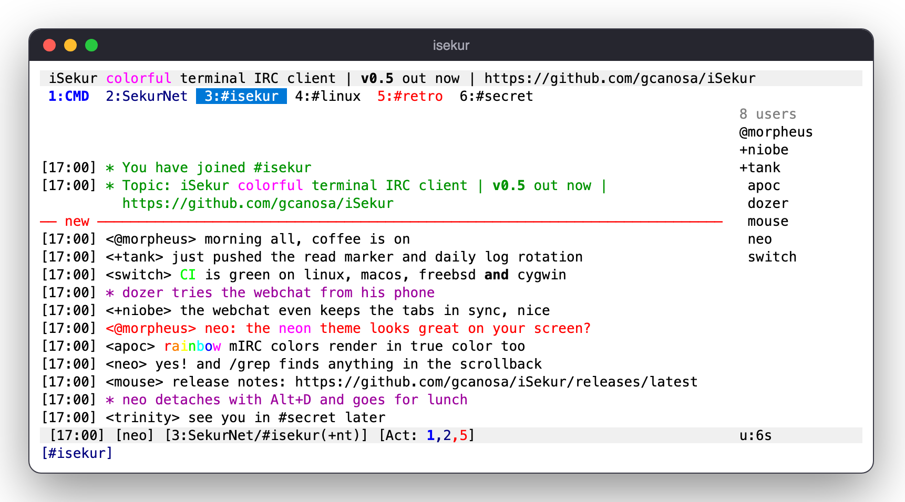
<nicks> and brackets, set by the theme's [layout]Writing your own
Copy a theme to ~/.config/isekur/themes/mytheme.theme, edit it, and pick it with /theme mytheme. Each [colors] entry is fg [bg] [bold|italic|underline|reverse|dim]. A color is #rrggbb, a 0–255 xterm number, a name (red, cyan, orange…) or default.
# from themes/default.theme; the file comments every element [colors] default = default default topic = #e6e6fa #3b2a6b tab_active = #1c1d2b #c792ea bold hilight = #ffffff #c2185b bold msg_self = #82aaff default bold join = #9ece6a [nicks] palette = #ff6b6b #ffa94d #ffd43b #a9e34b #69db7c #38d9a9 #3bc9db #4dabf7 #748ffc #9775fa #da77f2 #f783ac [layout] nicklist = on nicklist_width = 18 nick_width = 12 # mirc: 0, with nick_brackets = <> for inline <nicks> separator = │ timestamp = %H:%M # mirc also sets: font = Fixedsys, ... (the webchat's font) and window = win95 (its dialogs: mac | win95)
Plugins and scripting
iSekur runs plugins written in Lua 5.4. The Lua interpreter is built into iSekur, so there's nothing else to install. Plugins are optional: none is installed until you ask for one. Features that only some people want, like auto-away, live in plugins instead of in iSekur itself.
Installing and turning them on
# the catalog: the plugins in iSekur's repository, checked by sha256 before they're installed /plugin available /plugin install autoaway /plugin # or /plugins: what's installed, on or off, its commands /plugin update # every installed plugin, to the catalog's version /plugin remove autoaway # the file, its settings and its saved data
An installed plugin is on everywhere. You can also limit it to one network or one channel, with name@network and name@network/#channel:
/plugin disable autoaway # off everywhere... /plugin enable autoaway@sekurnet # ...but on in sekurnet /plugin enable seen@sekurnet/#isekur # only in that channel /plugin set autoaway message Gone fishing /plugin set autoaway@sekurnet idle 15 # 15 minutes idle, on sekurnet only /plugin set autoaway message # empty: back to the default
Each change is written to the config right away, one section per scope. You can also edit these sections by hand and run /reload:
[plugin.autoaway] # everywhere enabled = on message = Gone fishing [plugin.autoaway@sekurnet] # one network (its [server.sekurnet] name) idle = 15 [plugin.autoaway@sekurnet/#isekur] # one channel, lowercase announce = on
A value is looked up in the channel's section first, then the network's, then the global one, and finally the plugin's own default.
Auto-away is a plugin now
Up to 0.5, auto-away was built in, with the auto_away, auto_away_idle, away_message and away_announce settings. It is now the autoaway plugin. /plugin install autoaway moves those settings from [general] and each [server.name] into [plugin.autoaway] and [plugin.autoaway@name], then deletes the old keys from the config. Until you install it, nobody sets you away, and iSekur reminds you of this at startup. Its options are idle (minutes without typing; 0, the default, means only when nothing is attached), message and announce (a /me in your channels, which you can turn on per channel).
Writing a plugin
A plugin is a single file, ~/.config/isekur/plugins/<name>.lua. The name can use letters, digits, _ and -. The file runs once when the plugin loads, and that first run is where it declares its settings, its commands and the events it handles. Here is a complete one:
-- ~/.config/isekur/plugins/hello.lua isekur.setting("greeting", "Hello", "c") -- an option: default "Hello", settable per channel -- /hello [nick] isekur.command("hello", "[nick]", function(args, srv, target) if not srv then return "Use /hello in a channel" end -- a returned string shows as an error local who = args ~= "" and args or "everyone" isekur.say(srv, target, isekur.opt("greeting", srv, target) .. ", " .. who .. "!") end) -- wave back at whoever says "hi isekur" isekur.on("message", function(e) if not e.self and e.text:lower():find("hi isekur", 1, true) then isekur.exec(e.srv, e.target, "/me waves at " .. e.nick) end end)
To try it, run /plugin enable hello, then type /hello bob in a channel. After you edit the file, run /plugin reload hello. print(...) writes [hello] ... to the main window, which is handy while you're debugging.
Another example: a plugin that keeps lines matching a word out of view and counts them, keeping the count in the plugin's own store across restarts.
-- hush.lua: hide lines with a word in them; /hushed says how many isekur.setting("word", "", "c") isekur.on("message", function(e) local w = isekur.opt("word", e.srv, e.target) if w ~= "" and e.text:lower():find(w:lower(), 1, true) then isekur.store_set("hidden", (tonumber(isekur.store_get("hidden")) or 0) + 1) return true -- true: the line isn't shown end end) isekur.command("hushed", "", function() print((isekur.store_get("hidden") or 0) .. " lines hidden so far") end)
Events
Register a handler with isekur.on(event, function(e) ... end). The handler gets a single table. e.srv is the network's name and e.target is the channel or query, when the event has them. Handlers only fire in the networks and channels where the plugin is on.
| Event | Fields | When |
|---|---|---|
message | nick text self hilight notice action | a message or notice arrives. Return true to hide it. Your own lines only arrive when the server has echo-message |
join | nick host self | someone (or you) joins e.target |
part | nick reason self kick by | someone leaves e.target or is kicked from it (kick true, by is the kicker) |
quit | nick host reason | someone quits the network (no target) |
away | away | the server says you're away (306) or back (305) |
command | name args | you type a /command (not one a plugin runs). Return true to take it over |
tick | (none) | every second. There's no network, so check isekur.opt("enabled", srv) for the ones you act on |
attach, detach | (none) | a terminal or a browser comes back, or nothing is attached any more |
The isekur API
| Call | What it does |
|---|---|
isekur.command(name, usage, fn) | adds /name. fn(args, srv, target) gets the rest of the line, the tab's network (nil in the main window) and the tab's name. A returned string is shown as an error. iSekur's own commands can't be replaced |
isekur.setting(key, default, scope) | declares an option. scope is "g" (global only), "n" (up to the network) or "c" (up to the channel, the default). opt returns the default's type: a boolean (on/true/yes/1), a number or a string |
isekur.opt(key, srv, target) | an option's value in that network or channel. enabled is always there: whether the plugin is on there |
isekur.say(srv, target, text) | says each line of text in a channel or to a nick |
isekur.send(srv, line) | sends one raw IRC line |
isekur.print(srv, target, text) | shows text in that tab only (if there's no such tab, the network's tab, else the main window) |
isekur.exec(srv, target, "/cmd ...") | runs a command as if it were typed in that tab (except /plugin) |
isekur.store_get(key), isekur.store_set(key, value) | the plugin's own saved strings, kept in <name>.data next to it. nil removes a key |
isekur.servers(), isekur.channels(srv) | the connected networks; the channels you're in on one |
isekur.me(srv), isekur.rank(srv, chan, nick) | your nick there (nil when not connected); a nick's prefix in a channel ("@", "+", "", or nil if it isn't there) |
isekur.away(srv), isekur.attached() | whether you're away there; whether a terminal or a browser is attached |
isekur.idle(), isekur.detached_for(), isekur.time() | seconds since you last typed; seconds since anything was attached (0 while attached); Unix time |
isekur.name, isekur.api | the plugin's name; the API version (1) |
The sandbox
Each plugin runs in its own Lua state with only string, table, math, utf8 and the base library, minus load, loadfile and dofile. There is no io, os, require or debug, so a plugin can't read your files, run programs or open sockets of its own. A plugin gets 32 MB of memory. A call that runs too long (about 10 million Lua instructions, such as an endless loop) is stopped with an error. Errors show as [name] error: ..., and after 5 in a row the plugin is unloaded until /plugin reload.
command event) and every message, so only install plugins you trust. The catalog's plugins are reviewed in iSekur's repository, and their sha256 is checked before they're installed.Sharing one in the catalog
The catalog is the plugins folder in iSekur's repository: plugins/<name>/<name>.lua, with an entry for it in plugins/index.json:
{"name": "hello", "version": "1.0", "api": 1,
"description": "Says hello",
"sha256": "output of: shasum -a 256 plugins/hello/hello.lua"}
Open a pull request with both files. api is the isekur.api version the plugin needs; older iSekurs hide plugins that need a newer one. To test a catalog before it's published, start iSekur with ISEKUR_PLUGIN_URL=file:///path/to/plugins/.
Twitch
Twitch chat is IRC. /twitch opens its tab and asks for your login and an OAuth token if they're missing. Then /join streamer joins the chat of twitch.tv/streamer. Display names, name colors, mod/VIP badges (@/+), subs, raids, timeouts and room modes all show.
To get a token (/twitch token shows these steps too):
- At dev.twitch.tv/console, register an application with OAuth Redirect URL
http://localhost(exactly), Category Chat Bot and Client Type Public. Copy its Client ID. - Open
https://id.twitch.tv/oauth2/authorize?response_type=token&client_id=YOUR_CLIENT_ID&redirect_uri=http://localhost&scope=chat:read+chat:edit, with your Client ID in place of YOUR_CLIENT_ID. - Approve. The browser lands on a localhost page that doesn't load, which is fine. Copy what follows
access_token=in the address, up to the next&, and paste it when/twitchasks.
Files (DCC)
Files sent to you are only offered: nothing downloads until you /dcc get it. Downloads run in the background into dcc_dir (default ~/Downloads on the machine iSekur runs on), and a broken download resumes where it stopped. /dcc send nick file offers one; behind a router, set dcc_ip and forward dcc_ports. /dcc lists the transfers, and /dcc close n refuses or cancels one. Progress shows in the status bar and the webchat. Passive DCC isn't supported yet.
Channel ops and IRC operators
Op shortcuts: /massop, /massdeop, /massvoice, /massdevoice, /masskick (asks first), /lockdown (+mntsi) and /unlock, /kickban nick (bans *!*@host), /tempban nick minutes (iSekur lifts it when the time is up), /chanstats and /topicrotate minutes topic | topic ….
IRC operators: /oper user asks for the password, hidden. While you're +o or +s, server notices and WALLOPS go to a *snotices tab. /kill, /gline, /kline, /zline, /shun and friends take the reason as plain words; iSekur adds the :.
Command line
| Option | What it does |
|---|---|
-c file | Use file instead of ~/.config/isekur/isekur.conf |
-d, --daemon | Start in the background without a terminal. Attach with --attach or the webchat, which this mode always starts. Output goes to isekur.log next to the config. |
-a, --attach | Bring a detached iSekur back to this terminal. With none running for that config, a new one starts. |
-l, --list | List the running iSekurs, each with the command that attaches it |
--web, --no-web | Start the webchat, or don't, whatever [web] autostart says |
--hash-password | Read a password and print a [web] password_hash line |
-v, --version | Print the version |
man isekur has all of this offline.
Troubleshooting
Alt / Option keys don't work
On a Mac, set the terminal to use Option as Meta (Terminal: Profiles → Keyboard; iTerm2: Profiles → Keys → Left Option key: Esc+). Some terminals bind Alt combinations themselves: in Ghostty, a keybind = alt+… in its config eats that key before iSekur sees it. Every action also has a Ctrl key or a command (/detach, /win 3), and you can rebind them in [keys].
Colors look off
colors = auto uses true color when $COLORTERM says so. Over SSH or in tmux that variable is often lost: set colors = truecolor if your terminal supports it, or colors = 256 if it doesn't. In tmux, add set -ga terminal-overrides ",*:RGB".
iSekur stops when I log out of a server
systemd is killing your processes at logout: run loginctl enable-linger $USER once.
The webchat doesn't load
Bound to 127.0.0.1 without a cert, it speaks plain HTTP, so open http://, not https://. Behind a proxy, point the proxy at http://127.0.0.1:port. Other binds need HTTPS. A self-signed certificate works, but the browser warns and won't install it as an app.
A self-signed IRC server
/server host 6697 -tls -noverify skips the certificate check. Only use it for a server you trust.
Still stuck?
Ask in #iSekur on irc.sekurnet.org (/server irc.sekurnet.org 6697 -tls -name sekurnet), or open a GitHub issue.
ReferenceCommands
Every command, as /help command shows it. Words in grey are arguments, [ ] marks optional ones and | separates choices. Any command iSekur doesn't know goes to the server unchanged.
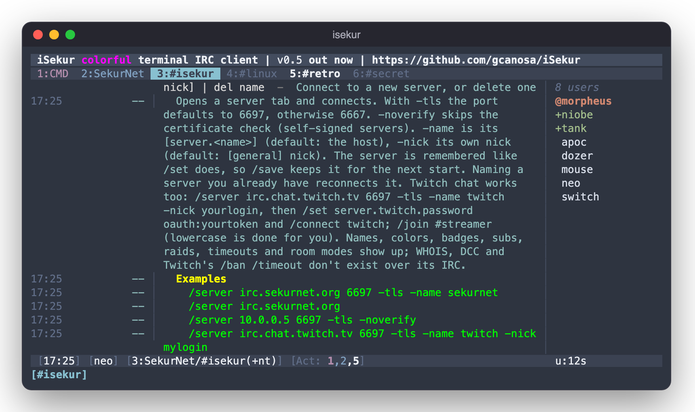
/help server in the app: the same text and examples as belowLoading…
Settings
Every key in the config file, with its default. Set one with /set key value (server keys: /set server.name.key value), then /save. /set alone opens the settings window. Keys shown with no default are optional: add them when you need them.
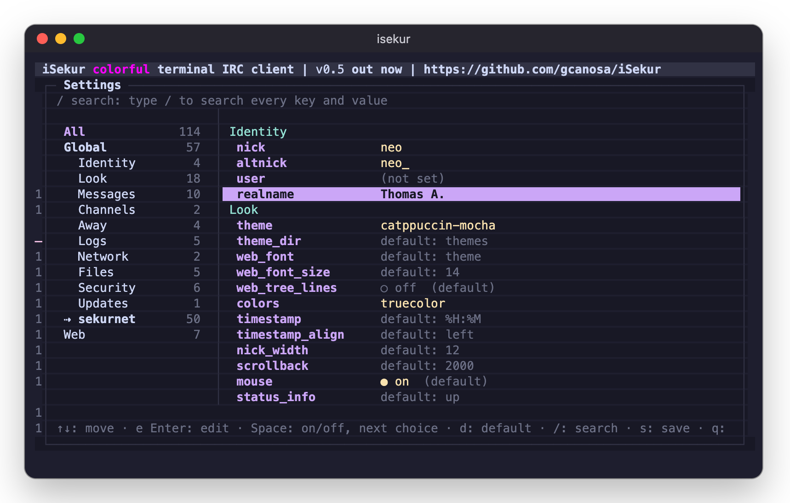
/set alone opens the settings window: categories on the left, / searches, e edits, Space togglesLoading…